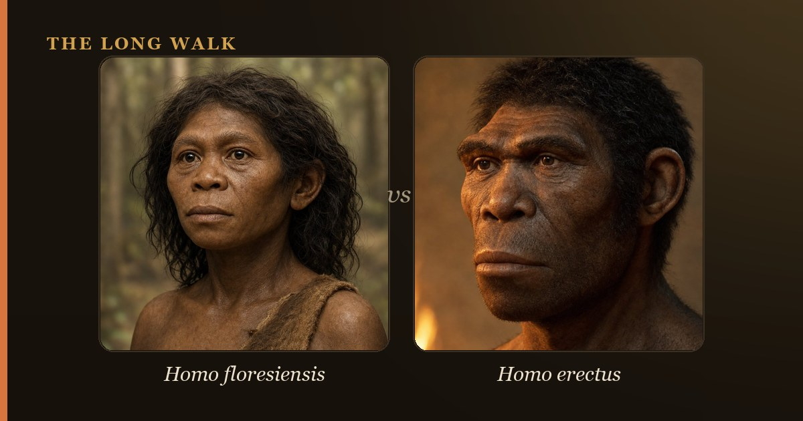

Homo floresiensis vs Homo erectus is really a question about ancestry. Homo floresiensis, the “hobbit” found at Liang Bua on Flores in 2003, stood about 1.1 m tall with a brain of about 426 cc; its bones date to about 100,000 to 60,000 years ago. Homo erectus was much larger and lived on nearby Java. One hypothesis says an erectus population shrank on Flores through island dwarfing. The other says floresiensis descends from an older, smaller hominin. Fossils from Mata Menge, 700,000 years old, lean towards the first, but the case is not closed.

In 2014, excavators at Mata Menge, a site in the So’a Basin of central Flores, found a fragment of a lower jaw and six small teeth in sandstone about 700,000 years old. Published in 2016, they were even smaller than the teeth of the Liang Bua “hobbit”, and their shape resembled early Homo erectus from Java. In 2024, a fragment of an upper arm bone from the same layers turned out to be smaller than the hobbit’s too.
Those finds go to the heart of the Homo floresiensis vs Homo erectus debate. Nobody doubts the two were very different animals. The question is whether one came from the other.
What the hobbit looked like
The partial skeleton LB1, found in September 2003 in the Liang Bua cave in western Flores, belonged to an adult about 1.06 m tall. Its brain was about 426 cc, close to a chimpanzee’s. It had no chin, a low skull, long arms, a wide pelvis and feet that were long relative to its legs. Other bones from at least a dozen individuals show that LB1 was typical, not a one-off. A 2016 restudy dated the bones to about 100,000 to 60,000 years ago and the stone tools to about 190,000 to 50,000 years ago.
Javanese Homo erectus was on another scale: probably 1.5 m or more, with brains of about 800 to 1,250 cc and thick, heavy skulls. The two species also differ in their time on the islands. Erectus was on Java for more than a million years and survived there until about 110,000 years ago.
Homo floresiensis vs Homo erectus: the two hypotheses
1. A dwarfed erectus. Some erectus-like hominins reached Flores, perhaps by accident on rafts of vegetation, and shrank over hundreds of thousands of years. Island dwarfing is well known: the elephant relative Stegodon shrank on Flores too, as did elephants on Sicily and hippos on Madagascar. Limited food and few predators can favour small bodies.
2. A small, older ancestor. The hobbit descends from a hominin that was already small, perhaps similar to Homo habilis, and that left Africa before erectus or alongside it. No such hominin has been found in Asia, but the hobbit’s body has features that look older than erectus.
The case for a shrunken erectus
- Skull shape. Yousuke Kaifu and colleagues found in 2011 that LB1’s skull, scaled down, matches early Javanese erectus in many details better than it matches habilis.
- Mata Menge. The 700,000-year-old teeth look like small versions of early Javanese erectus teeth, and they show the small size was reached early, within a few hundred thousand years of the first known tools on Flores.
- Brain shrinkage is possible. The hobbit’s brain is much smaller than body-size scaling would predict for a dwarfed erectus. A 2009 study of extinct dwarf hippos on Madagascar found their brains also shrank more than expected, showing the pattern is not impossible.
The case for an older, smaller ancestor
- The wrist. Matthew Tocheri’s 2007 study of LB1’s wrist bones found a shape shared with apes and australopiths, not with erectus or later humans.
- The feet. The feet are long and flat, an older pattern than the arched foot seen in later Homo.
- Family-tree analysis. A 2017 study by Debbie Argue and colleagues compared over 100 traits and placed floresiensis as a branch near habilis, splitting off before erectus.
Supporters of the dwarfing hypothesis reply that dwarfing can make some features look older than they are. Both sides are reading the same bones; it is genuinely unresolved.
An island world
The hobbit did not live in an ordinary landscape. Flores has been an island throughout human history, separated from mainland Asia by deep water, and its animals followed what biologists call the island rule: large species tended to shrink and small ones to grow. The hominins shared the island with a dwarf elephant relative, Stegodon florensis insularis, Komodo dragons, a giant marabou stork that stood about 1.8 metres tall, and rats the size of small cats.
That setting matters for both hypotheses. If Homo floresiensis descended from erectus, it would be a hominin example of the same shrinking seen in Stegodon. If it descended from a smaller ancestor, the island may have changed it less. Stone tools occur with Stegodon bones at Liang Bua, but whether the hominins hunted these animals or scavenged them is unclear. Komodo dragons, which may have preyed on young Stegodon, were probably competitors as well as a danger. For more on the island's animals, see the animals of Flores.
The timeline problem
Stone tools at Wolo Sege in the So’a Basin are at least a million years old. Mata Menge shows small hominins at about 700,000 years ago. Liang Bua shows them from about 190,000 until about 50,000 years ago. That is a long, continuous story on one island, which fits a single lineage settling there early and staying.
The oldest tools are the weak point for both hypotheses. If erectus made them, it had reached Flores by a million years ago. If a smaller, older hominin made them, it would have needed to cross from the mainland. Flores was never joined to Asia, even when sea levels fell, so both versions require a sea crossing.
What about the “sick human” claim?
Soon after 2004, some researchers argued that LB1 was a modern human with a disorder such as microcephaly, Laron syndrome or Down syndrome. Those proposals have been widely rejected. Several individuals share the same anatomy, the wrist and foot are unlike any modern human condition, and the remains are older than modern humans in the region.
A second island hominin: Homo luzonensis
In 2019, researchers named Homo luzonensis from teeth and bones found in Callao Cave on Luzon, in the Philippines, dated to at least 50,000 and 67,000 years ago. It also combines small size with odd, older-looking features, such as curved finger and toe bones. Stone tools and a butchered rhinoceros on Luzon are about 700,000 years old. Two small hominins on two islands suggest that whoever left Asia’s mainland coast evolved in unexpected directions. See our Homo luzonensis article.
What would settle it
DNA is unlikely to survive in tropical Flores. Ancient proteins from tooth enamel last longer and have already helped place other species. More fossils from the So’a Basin, especially skulls between one million and 700,000 years old, would show whether the first Flores hominins were large or small on arrival. Until then, the hobbit sits on the family tree with a dotted line. For the island’s other strange animals, see the animals of Flores.
Trace Homo erectus across continents and see where the Flores hobbit branches off on the interactive family tree.
Explore the family tree →Homo floresiensis vs Homo erectus FAQ
Did Homo floresiensis evolve from Homo erectus?
Possibly. Its skull resembles early Javanese Homo erectus, and 700,000-year-old fossils from Mata Menge on Flores look like small erectus teeth. But its wrist and feet look older than erectus, so some researchers think it descends from an earlier, smaller hominin.
How tall was Homo floresiensis?
About 1.06 m, based on the skeleton LB1 from Liang Bua cave. Its brain was about 426 cc.
When did Homo floresiensis live?
Its bones at Liang Bua date to about 100,000 to 60,000 years ago, and stone tools there to about 190,000 to 50,000 years ago. Related fossils at Mata Menge are about 700,000 years old.
Did Homo floresiensis meet Homo erectus?
There is no evidence. Homo erectus survived on Java until about 110,000 years ago, so they overlapped in time, but they lived on different islands separated by sea.
How is Homo luzonensis different from Homo floresiensis?
Homo luzonensis, from Luzon in the Philippines, is known only from teeth and a few bones about 50,000 to 67,000 years old. It is also small, but its teeth and hand and foot bones differ, so it is treated as a separate species.
- Brown, P. et al. (2004). 'A new small-bodied hominin from the Late Pleistocene of Flores, Indonesia.' Nature 431. nature.com
- Sutikna, T. et al. (2016). 'Revised stratigraphy and chronology for Homo floresiensis at Liang Bua in Indonesia.' Nature 532. nature.com
- van den Bergh, G. D. et al. (2016). 'Homo floresiensis-like fossils from the early Middle Pleistocene of Flores.' Nature 534. nature.com
- Argue, D. et al. (2017). 'The affinities of Homo floresiensis based on phylogenetic analyses of cranial, dental, and postcranial characters.' Journal of Human Evolution 107.
- Kaifu, Y. et al. (2024). 'Early evolution of small body size in Homo floresiensis.' Nature Communications 15. nature.com